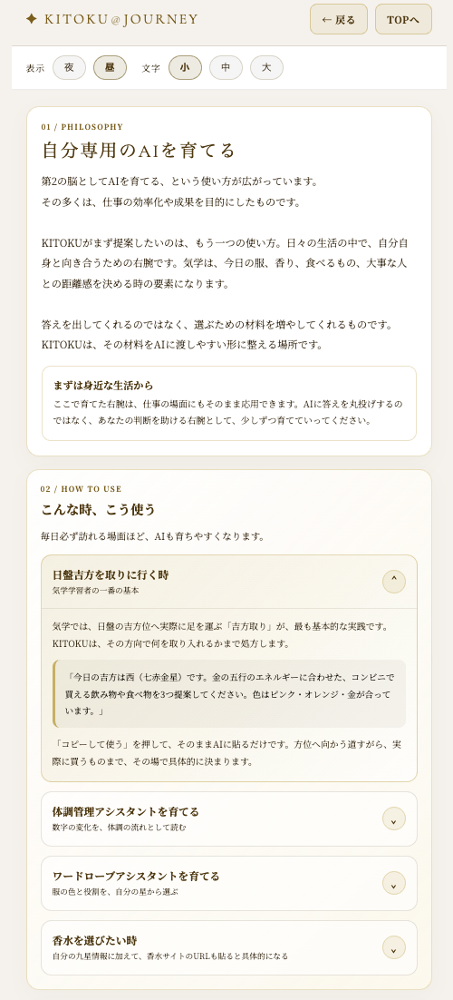
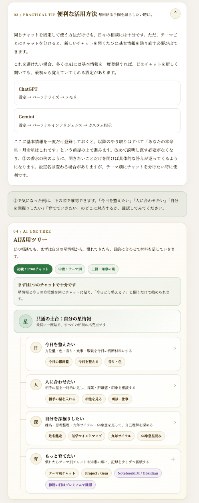
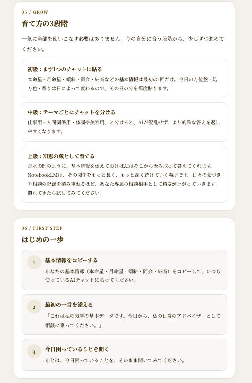

AIの答えを、賢く受け取る力
AIに気学を聞く方法そのものではなく、AIの答えをどう受け取り、どう確かめ、自分の判断に変えていくかを学ぶ回です。
もっともらしさと正しさを分けて見る。
数字、聞き方、一次資料で答えを確かめる。
最後にどう動くかは、自分の判断として選ぶ。
1. AIは百科事典ではない
AIはとても賢く、たくさんのことを知っています。でも、知っていることと、正しいことは、実はイコールではありません。
AIの答えは、もっともらしく聞こえるように文章を組み立てるのが得意です。それは「正確である」こととは、別の能力です。
2. KITOKUを作る過程で、実際にあったこと
実は、KITOKUというアプリを作る過程でも、AIの答えに振り回されたことが何度もあります。
ある機能の正確な条件をAIに確認したところ、1回目の答えと、2回目に別の角度から聞いた答えが真っ向から食い違っていました。しかも、どちらの答えも、自分で示した条件を計算し直すと、自分の主張と矛盾していました。
最終的に決着がついたのは、AIへの質問を重ねてではなく、昔の紙のノートを1冊、実際に開いて確認したときでした。AIの答えを何往復も重ねるより、実物の資料1枚の方が、ずっと確実だったのです。
3. AIの答えを賢く受け取る、5つの習慣
AIの答えを使う時は、受け取った瞬間に結論へ飛ばず、少しだけ検証の時間を挟みます。難しいことではありません。次の5つを覚えておくだけで、答えの見え方が変わります。
| 習慣 | やること |
|---|---|
| 1. 数字は検算する | 「数年に一度」などの頻度・数値の主張は、実際に計算し直せないか考える |
| 2. 聞き方を変えて再確認する | 同じ質問を、時間や角度を変えてもう一度投げてみる |
| 3. 理由と根拠を区別する | もっともらしい理由と、確かめられる根拠は別物と心得る |
| 4. 答えが割れたら一次資料に戻る | AI同士で矛盾したら、AIに聞き続けず、元の資料や実物を確認する |
| 5. わからないと言うAIを信用する | 知ったかぶりで答えるAIより、正直に限界を認めるAIの方が頼れる |
4. 星情報をAIに渡し、自分専用に育てる
KITOKUの「自分専用のAIを育てる」画面では、本命星・月命星・傾斜・同会・納音などの基本情報を、AIに渡しやすい形で整えます。
大切なのは、ただ質問を投げることではありません。まず自分の星情報を前提として渡し、その上で「今日どう整えるか」「どんな香りや服が合うか」「相手にどう合わせるか」を聞くことです。AIの答えは、その前提があるほど具体的になります。
| STEP | やること |
|---|---|
| 1 | 自分の星情報をコピーして、いつものAIチャットに貼る |
| 2 | 日盤吉方・体調・服・香水など、今聞きたい例を選ぶ |
| 3 | 必要に応じて、今日の方位盤や香水サイトのURLなどを追加する |

5. 毎回貼る手間を減らす
同じチャットで相談するだけでも、日々の実践には十分です。ただ、服・体調・仕事・人間関係のようにテーマごとにチャットを分けると、そのたびに基本情報を貼り直す手間が出てきます。
そこで便利なのが、ChatGPTやGemini側のメモリ・カスタム指示です。ここに基本情報を一度だけ登録しておくと、以降のやり取りはすべて「あなたの本命星・月命星はこれです」という前提で進みます。

6. AIとの付き合い方を段階で育てる
気学の五行で見ると、AIは「知性・情報」を象徴する火（九紫）の気質に近いとされています。星によって、すぐ動きたくなる人もいれば、いったん吟味してから使いたい人もいます。
| 段階 | 使い方 |
|---|---|
| 初級 | まず1つのチャットに、自分の星情報を貼る |
| 中級 | 仕事・人間関係・体調や美容など、テーマごとにチャットを分ける |
| 上級 | NotebookLMなどに日々の気づきや相談記録を蓄積し、知恵の蔵として育てる |

7. KITOKUという場所自体が、学びの旅の途中
ここまで15回にわたって、気学の基礎から、方位・引越し・ビジネス・輪重吉方まで、幅広くお伝えしてきました。
実はKITOKUというアプリ自体も、「気学の権威が作った教科書」ではありません。AIと一緒に、試行錯誤しながら形にしてきた、学びの記録です。今日この回を読んでいるあなたと、同じ立場から始まっています。
8. 情報を、あなたの知恵に変える
AIは、答えをくれる存在ではありません。考えるための材料を、たくさん見せてくれる存在です。
最後にその材料をどう組み合わせ、何を信じ、どう動くか。それを決めるのは、いつだってあなた自身です。
KITOKUも、AIも、あなたの代わりに決めることはできません。でも、あなたがより良く決めるための、良き相棒にはなれます。